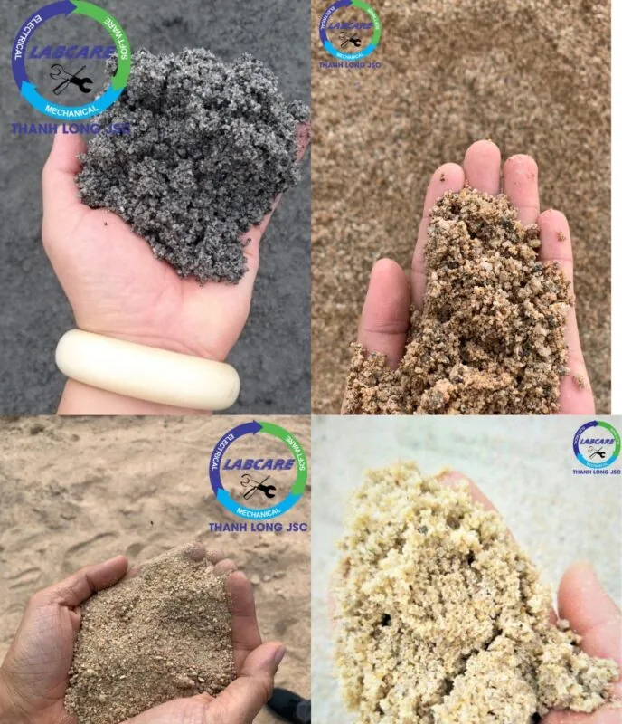
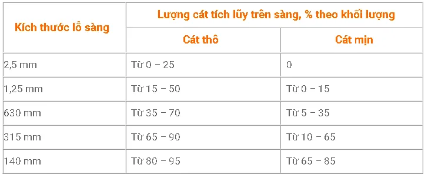
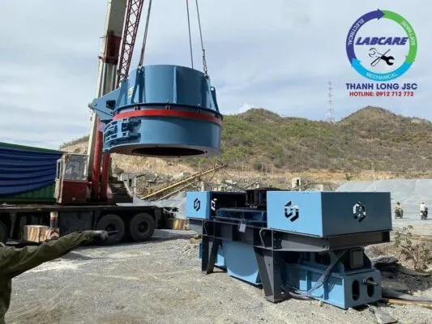

Các mỏ cát tự nhiên đang dần cạn kiệt, nguyên liệu thay thế cát tự nhiên đang được sử dụng rộng rãi là cát nhân tạo. Cát nhân tạo giá thành thấp hơn, hiệu quả cao, ít hạt mịn và điều chỉnh được kích thước hạt cát. Vậy giá cát nhân tạo là bao nhiêu ? Đơn vị vị cung cấp dây chuyền sản xuất cát nhân tạo chất lượng, uy tín ? Cùng tìm hiểu với chúng tôi nhé.
Giá cát nhân tạo ?
Cát nhân tạo hay còn gọi cát nghiền, cát công nghiệp. Được nghiền từ các loại đá cứng như: Đá granite, đá vôi, sỏi sông, sỏi đồi, sỏi cuội, … Với kích thước tương đương với hạt cát tự nhiên, không lẫn tạp chất, ít hạt mịn hơn, …
Ứng dụng công nghệ đá va đá để hạt cát nghiền nát chính nó, với tốc độ cao đá vỡ ra có kích thước từ 0,5 – 5mm.
So sánh giá cát nhân tạo và cát tự nhiên
|
Tiêu chí |
Cát nhân tạo |
Cát tự nhiên |
| Giá Thành |
Giá thấp |
Giá cao |
| Nguồn khai thác | Từ nhiều nhiều nguồn nguyên liệu đá cứng: Đá granite, đá vôi, sỏi sông, sỏi đồi, sỏi cuội, đá cát kết, … | Từ mỏ cát tự nhiên, lòng sông, lòng suối, … hiện nay đang cạn kiệt. |
| Giấy phép khai thác | Đang được chính phủ và nhà nước tạo điều kiện cấp phép và mở rộng | Với chính sách rà soát, siết chặt, đang được xử lý mạnh với tình trạng “cát tặc” |
| Thành phần tính chất | Không bị lẫn tạp chất, kiểm soát được độ ẩm, hạt đồng đều, ít hạt mịn, … | Do không kiểm soát được đầu vào nên cát bị lẫn tạp chất. |
| Biên dạng | Hạt đồng đều, có thể điều chỉnh module. Ít hạt mịn, độ kết dính cao. | Không đồng đều do khai thác thủ công |
| Tài nguyên môi trường | Không ảnh hưởng tới môi trường cát tự nhiên. | Được lấy từ mỏ cát tự nhiên, lòng sông nên việc sạt lở đất cát, ảnh hưởng đến hệ sinh thái của rừng. |
| Trữ lượng | Tài nguyên từ nhiều nguồn nguyên liệu tự nhiên, nên trữ lượng để sản xuất cát nhân tạo là vô cùng nhiều. | Bị hạn chế, cạn kiệt nguồn cát tự nhiên do khai thác quá mức. |

Các tiêu chuẩn giá cát nhân tạo cho từng ngành
Yêu cầu thành phần hạt cát có kích thước nhỏ hơn 5mm

Yêu cầu cát nhân tạo cho bê tông
- Module khoảng 2,0 đến 3,3mm. Hạt đồng đều, có tính linh hoạt cao
- Xử lý thành phần tạp chất, để quá trình kết dính bê tông không bị ảnh hưởng đến chất lượng
- Hàm lượng lọt sàng với kích thước lỗ 75mm, 16 % theo khối lượng, không được lớn hơn
- Đối với bê tông chịu mài mòn và va đập, hàm lượng qua sàng có kích thước lỗ 75 µm, không lớn hơn 9 %.
- Đáp ứng nhu cầu kỹ thuật theo tiêu chuẩn ASTM C-33
Báo giá cát nhân tạo
Hầu như các chủ mỏ đều chuyển dần từ công nghệ sản xuất thủ công bằng các dây chuyền sản xuất cát nhân tạo chuyên nghiệp, thiết bị được nhập khẩu từ nước ngoài từ nhà sản xuất SRH Vì các dây chuyền các dây chuyền sản xuất thủ công, không đáp ứng được tiêu chuẩn được đưa ra từ các dự án công trình như:. Xây dựng hạ tầng, chung cư, cao tốc Bắc – Nam, thủy điện Sơn La, Thủy Điện Hòa Bình, Sân bay Tân Sơn Nhất, Sân bay Nội Bài, gạch không nung, VLXD, san lấp, bê tông cống, bê tông cốt liệu, các trạm trộn bê tông đã tăng nhu cầu sử dụng cát nhân tạo từ 30% lên 100% với giá bán 170.000 – 200.000đ/m³.
Tất cả các loại cát xây dựng có giá dao động từ 90.000 – 160.000đ/m³. Mức giá trung bình cát tự nhiên từ 190.000 – 250.000đ/m³. Với mức giá hợp lý, khách hàng có thể lựa chọn giá, chất lượng và mục đích sử dụng phù hợp để tiết kiệm chi phí cho công trình.
Lưu ý, vì nhu cầu sử dụng cát nhân tạo khá nhiều nên trên thị trường đang có các loại cát nhái, cát trộn lẫn tạp chất.
Việc này ảnh hưởng khá nhiều đến các đơn vị uy tín trên thị trường, được đầu tư các thiết bị hiện đại từ SRH
Dây chuyền sản xuất cát nhân tạo bao gồm ?
- Máy kẹp hàm – Thiết bị đầu tiên trọng trạm nghiền đá hoặc trạm nghiền cát nhân tạo
- Cấp liệu rung
- Máy nghiền côn
- Sàng rung phân loại
- Máy nghiền cát nhân tạo – Bộ phận chính trong trạm nghiền cát nhân tạo
- Máy rửa cát – Thiết bị giúp cát không lẫn tạp chất và đạt chuẩn tiêu chuẩn ASTM C-33.

☎ Liên hệ ngay với chúng tôi Zalo, hotline: 0912 712 772
Thanh Long JSC đại diện SRH tại Việt Nam chuyên cung cấp:
- Dây chuyền nghiền cát/đá cố định: Máy kẹp hàm, máy nghiền côn, sàng rung phân loại, máy nghiền cát nhân tạo VSI, …
- Dây chuyền nghiền cát/đá di động: máy kẹp hàm di động, máy nghiền côn di động, sàng rung phân loại di động, máy nghiền cát nhân tạo VSI di động,..
- Công nghệ rửa/tách:: Máy rửa cát theo module, sàng rung tách nước, máy tuyển rửa cát, máy tách cát mịn, máy thu hồi cát mịn…
- Vật tư, thiết bị phụ tùng: Dao nghiền, lưới sàng, má kẹp hàm, nón côn, …
Liên hệ với Thanh Long JSC Kênh video Youtube
Page Facebook: Công Nghệ Máy Nghiền Đá
Website: https://thegioimaynghienda.com https://labcare.com.vn/
#bn